Shark Tank
Exposition
Over the persiod of two weeks, a team of 5 students built an immersive VR underwater experience which was exhibited during the final expostion. During this experience users get to interact with sharks while being in a cage underwater. This provides a thrilling element enriching the users experience.
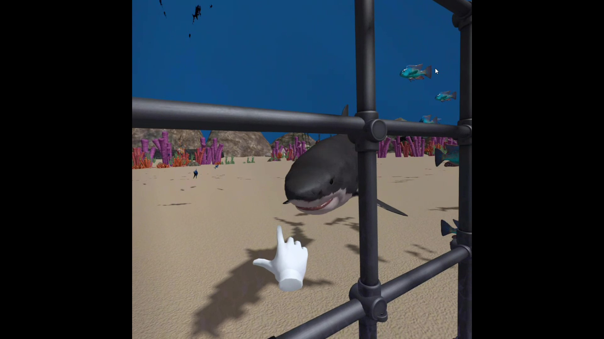
Process
Day 1
Group Work:
- The group started with a team building activity where the members got aquatinted with each other. The team consists of six members, three of whom are CMD students.
- Team conflict.
- Team members: Rosa Dominique Kristina Amelia Valerie Mayar.
Personal Contribution:
- Brainstorming ideas.
- Converging and Diverging.
- Partcipating in group discussions.
Progress:
- Shared previous personal experiences in relation to the technology (XR).
- Discussed possibilities of AR/VR/XR.
- Brainstormed ideas.
- Created a diagram of possible directions for the final product.
- Decided that the final product would make use of VR and immersive rooms/environments.
How the time was spent:
- Ideating.

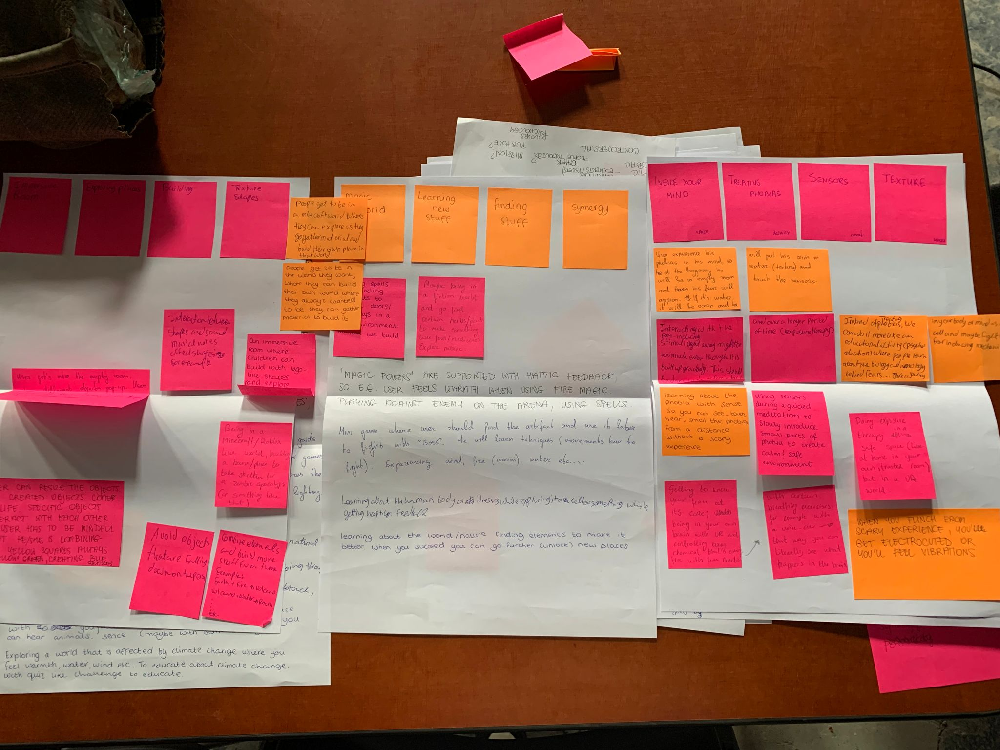
Day 2
Group Work:
- Mostly individual work.
- Group discussion about the final concept.
- Valrie Left the Team.
Personal Contribution:
- Searching and downloading Unity assets.
- Watch Unity tutorials.
Progress:
- Decided on the concept (Shark Tank).
How the time was spent:
- Learning.
- Downloading Unity.
- Deciding A-Frame or Unity and exploring possibilities.
- Trying the Oculus.
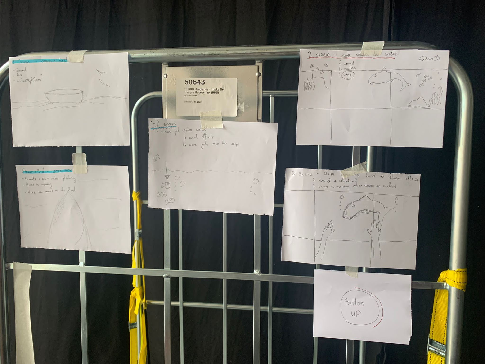
Day 3
Group Work:
- Mostly individual work.
- Group discussion about the final concept.
Personal Contribution:
- Learning how to build an underwater seen using YouTube videos.
- Research on how to connect Unity to Oculus.
- Casting from and to Oculus.
Progress:
- Finalized the Shark Tank concept.
How the time was spent:
- Group Dynamics Taiichi Exercise on power and consensus.
- o Learning how to build an underwater seen using YouTube videos.
- Figuring out how to connect Unity to Oculus.
- Trying the Oculus.
- Casting from Oculus to computer.
- Casting from oculus to computer.
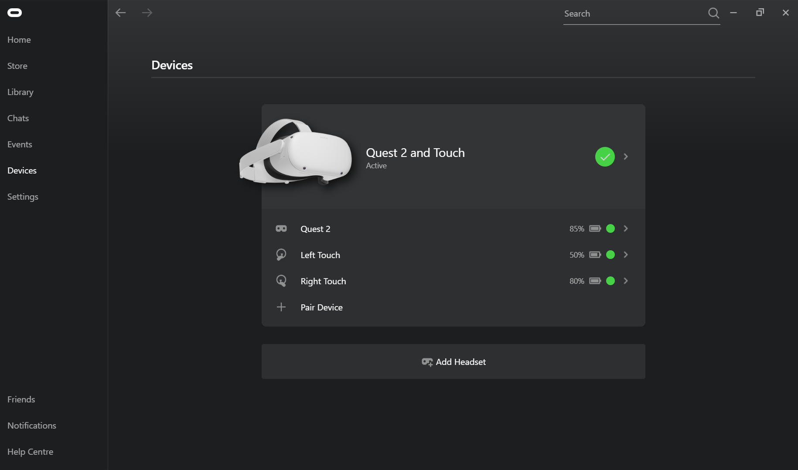
Day 4
Group Work:
- Figuring out build an APK and deploy it on oculus on different laptops.
Personal Contribution
- Research for solutions.
- Figuring out build an APK and deploy it on oculus using different sources.
- Guiding the process of setting up the Oculus.
Progress
- Not much still stuck with the Oculus.
How the time was spent:
- Setting up the Oculus.
- Guest lecture from two guest from LU.
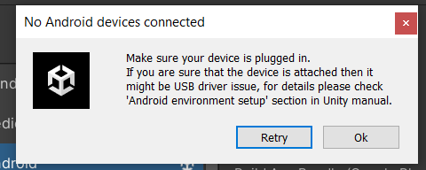
Day 5
Group Work:
- Figuring out how to connect Oculus to PC.
- Creating a timeline with tasks.
- Deciding on a Mantra.
- Team conflict.
Personal Contribution
- Figuring out build an APK and deploy it on Oculus.
- Guiding in the setup of Oculus.
- Discussing with the teacher the setup of the Oculus.
- Suggesting material for the psychical setup of the experience.
- Brainstorming for the Mantra.
- Building a cage in Unity.
- Searching for assets to use.
- Finding out how to collaborate on the same project on Unity.
- Finding out how to upload unity apps on Steam.
- Following Water Shader tutorial.
Progress
- Cage Built.
- Project Runs on Oculus owned by a team member at home.
How the time was spent:
- Setting up the Oculus.
- Guest lecture.
- Following water shader tutorial.
- Building objects in Unity.
- Searching for solutions.
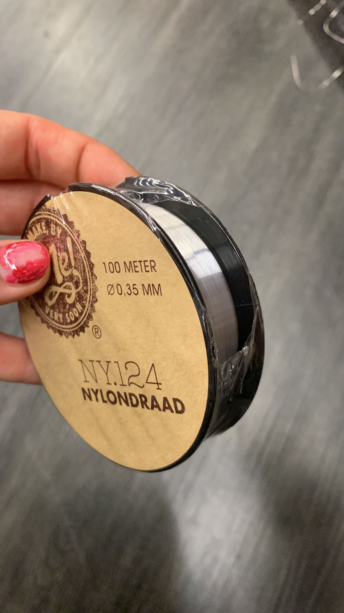
Day 6
Group Work:
- Buying Material.
- Working on Unity.
- Making the physical cage safe.
- Testing Oculus Connection.
Personal Contribution
- Following Unity tutorials.
- Research.
Progress
- Having Oculus finally connected to Unity.
- Having object (fish, shark) movement setup in Unity.
- Having the cage Oculus proof/safe.
- Buying the material needed for the setup.
How the time was spent:
- Creating a plan.
- Connecting Unity to the oculus.
- Deciding on the underwater elements.
- Building the cage holder.
- Decorating the cage.
- Guest lecture.
- Buying material for the setup.
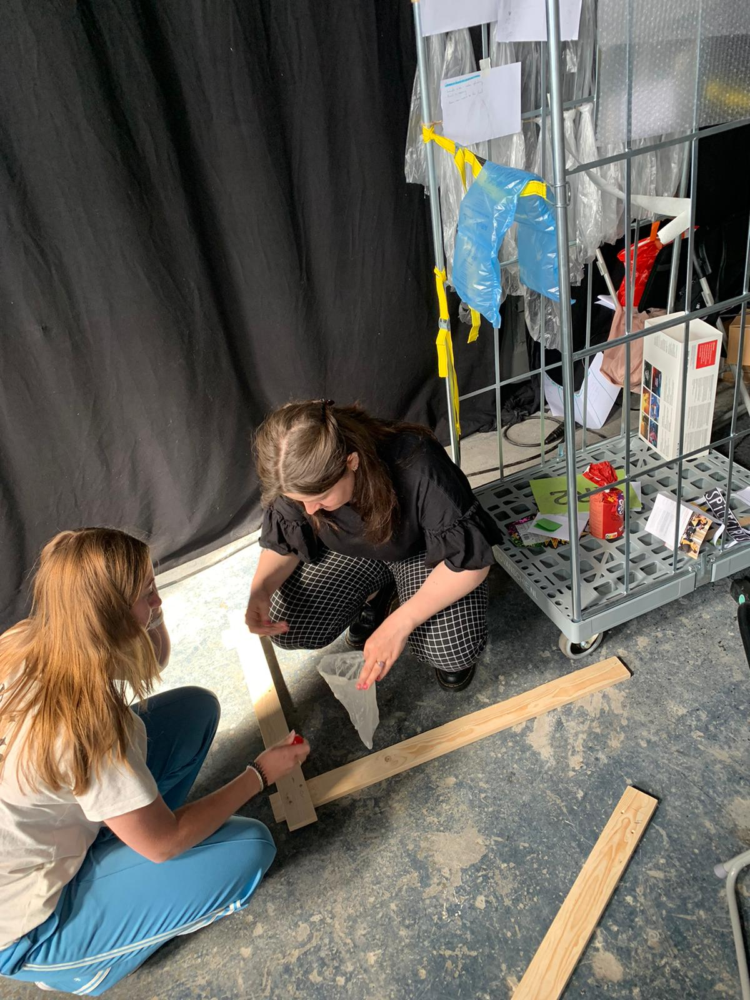
Day 7
Group Work:
- Building decoration elements for the expo (shark, fish).
- Adding Objects to unity to make an underwater scene.
Personal Contribution
- Learning how to use the simple biod asset to build a dynamic underwater scene using unity.
Progress
- Having a script for the expo.
- Having draft design of the expo.
- Having draft design for the staff cards.
- Having the underwater static scene built.
How the time was spent:
- Building decoration elements for the expo (shark, fish).
- Adding Objects to unity to make an underwater scene.
- Designing the poster for the expo.
- Simulating an underwater scene using a Unity asset.
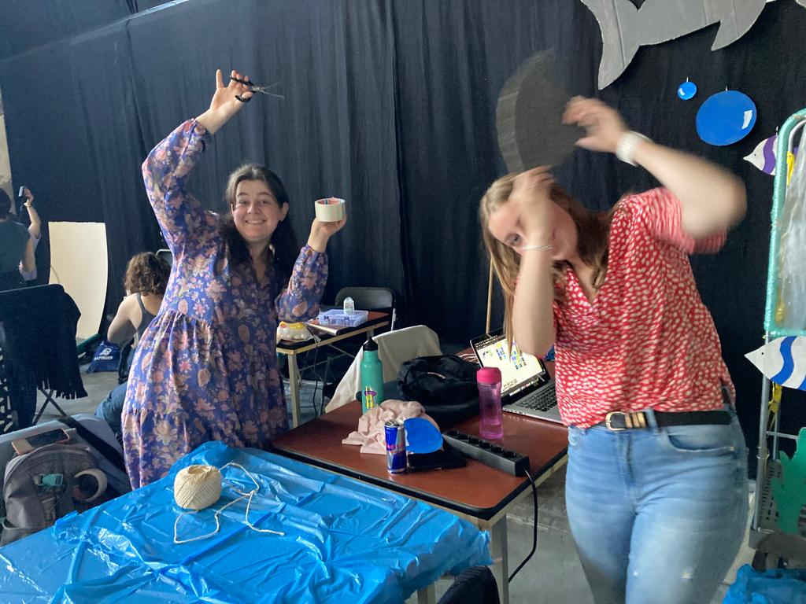
Day 8
Group Work:
- Finishing the setup.
- Connecting to the oculus.
- Working on the final sense.
- Printing and creating the staff tags.
- Practicing the script.
- Testing.
Personal Contribution
- Adding water.
- Adding schools of fish.
- Adding fog.
- Adding wobble.
Progress
- Setup almost ready.
- Having created a semi-realistic senesce with water, fog, wobble and schools of fish, however the team created version did not build and run in the oculus.
- Finalizing the poster and sending it to be printed.
How the time was spent:
- Building the final scene.
- Trying to deploy the unity file of the final version but failing making the team revert to a previous version.
- Building the setup.
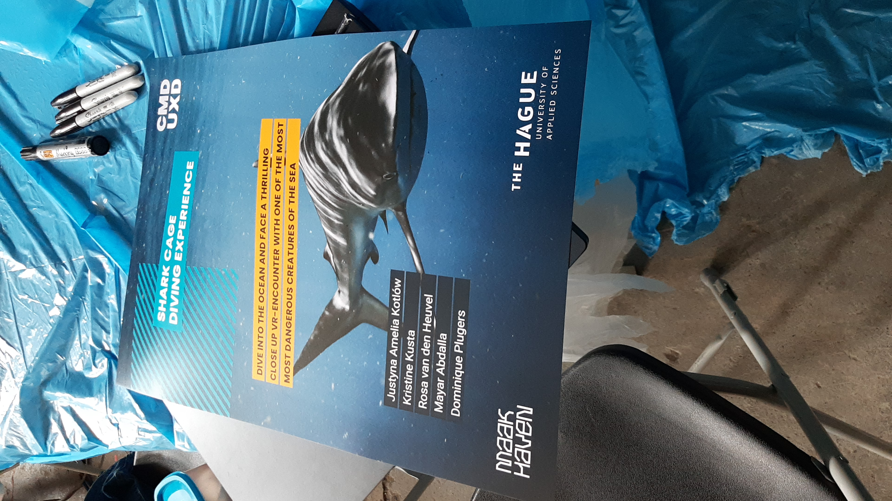
Day 9
Group Work:
- Solving the issue with the Unity Oculus connection.
- Building the setup.
- Testing the experience.
Personal Contribution
- Connecting unity to the Oculus.
- Uploading the game to Unity.
- Clean up.
- Help with the expo setup.
- Adding schools of fish in Unity.
- Adding movement to fish in unity using the swim script.
- Testing the final version of the experience on the oculus.
- Guiding vitors through the experience
- Testing intsllations of other groups.
Progress
- Having the final version of the experience setup.
- Having the setup ready.
How the time was spent:
- Having trouble with the Oculus Unity connection.
- Adding final adjustment to the Unity file.
- Testing the experience on both team members and non-team members.
- Preparing the setup.
- Cleaning the setup.
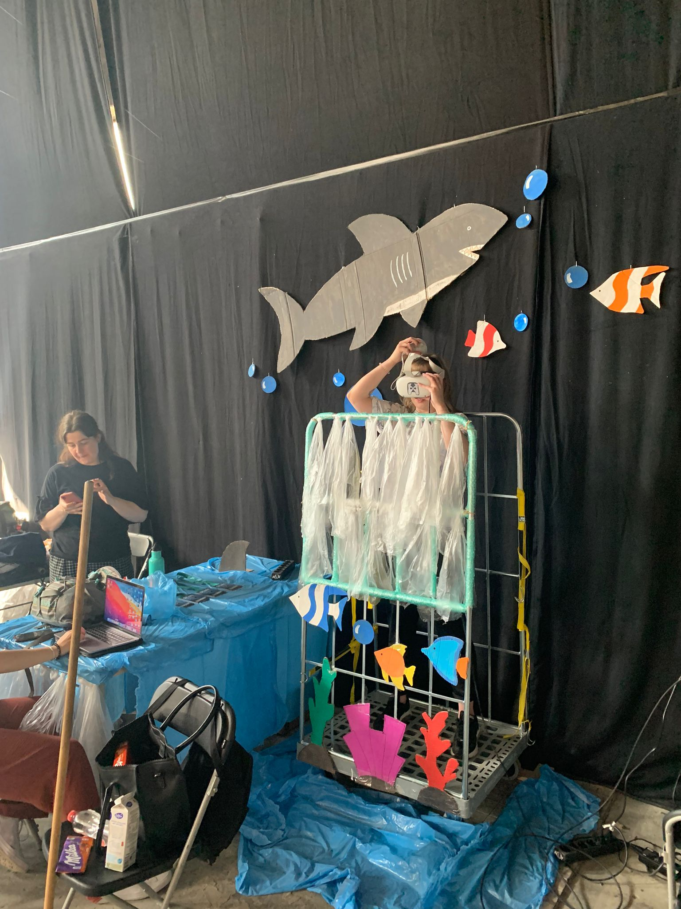
Shark Tank
Shark Tank offers a thrilling VR experience in which users experience the underwater world. It offers an immersive experience that extends to the real world. Users get to interact with sharks which is an exciting experience. While this game is meant for fun, simliar games can be developed by specialist to help people overcome their phobias through exposure therapy.
How It Works
Shark Tank is a Unity-built VR experience. The user is given instructions and given the Oculus controllers. The steps into the physical cage and puts on the headset. The experience is already booted so the user can interact immediately with the underwater environment. When the user sticks their hand out of the cage, the Shark detects it and approaches the user, thus creating a thrilling experience. When the user pulls back their hand, the shark swims away. To increase immersion, the physical cage is shaken to simulate the underwater feeling and the shark hitting the cage adding an extra layer of reality to it.
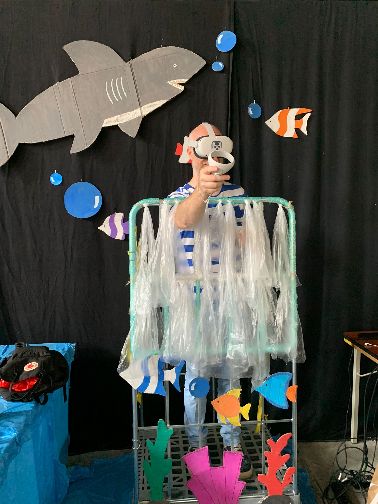
Reflection
The process was frustrating at the beginning since all the attempts to get a Unity build uploaded to the Oculus failed at first assuming us to waste valuable time (more than a week) on resolving the issue rather than perfecting our final product. Nonetheless, we managed to deliver a functional product for the exposition. It was quite surprising to witness the reactions form the visitors, fellow students, and teachers. There were those who screamed out of fear, those who giggled from joy, and those who were so immersed in the experience that they almost tripped the cage while trying to reach forward for the sharks. We had long rows of people wanting to try out the experience, but unfortunately, we had to decline some of the request or ask them to come later because the Oculus battery could not keep up being powered for the duration of the exposition which result in us charging it for a bit to allow one or two visitors to try the game and then charge it again. However, seeing people return multiple times and some even playing the game twice was quite an indicator of how successful our game and setup were. Even though I was quite displeased with the final product, I was quite impressed after seeing the reactions of the visitors.
The quality of our final product could have been better, if we did not loss that much time trying to figure out the Oculus connection. Still, we reverted to an older version of our product that is less realistic as the version with fog and water shader ran on the laptop, but not the Oculus. Additionally, the position and the movement of some of the fish were unrealistic and some even static, but due to the time constrains, we were unable to fix that.
The atmosphere in the group was quite turbulent as some of the team members kept getting into conflicts. This was fueled further by the frustration of the Oculus not connecting. However, regardless of the unstable group dynamics, the group managed to cooperate in creating the finale product. My role in the team was mainly technical in which my main focus was on the Oculus and Unity. During this project I learned how to set up Unity and Oculus, how to connect them and cast from one device to the other, how to build a scene using unity assets and shaders, how to build an underwater seen and how to create a full VR experience. While there is still a lot for me to learn about Unity, I would not mind working on Unity or VR related projects in the future.
I personally had a hard time working in such noisy and corded environment. It was harder for me to think clearly and at times, it would have been more efficient to work from somewhere quite in school where I could focus better. However, I was quite impressed to see how we managed to deliver a functional product in the span of two weeks. Seeing ones effort materialize is quite nice and the fact that a product that was far from perfect could elicit such a reaction from the users made me rethink my perfectionistic tendencies. It also made me wonder, if such an imperfect product made by amutures in the field of VR and who are new to Unity can have such an effect, then what are the possibilities out there? Overall, The Lab Weeks was quite a nice experience, and it was nice to see what other teams came up with and test their products.
Click here for more pitures and videos
Miro Link.